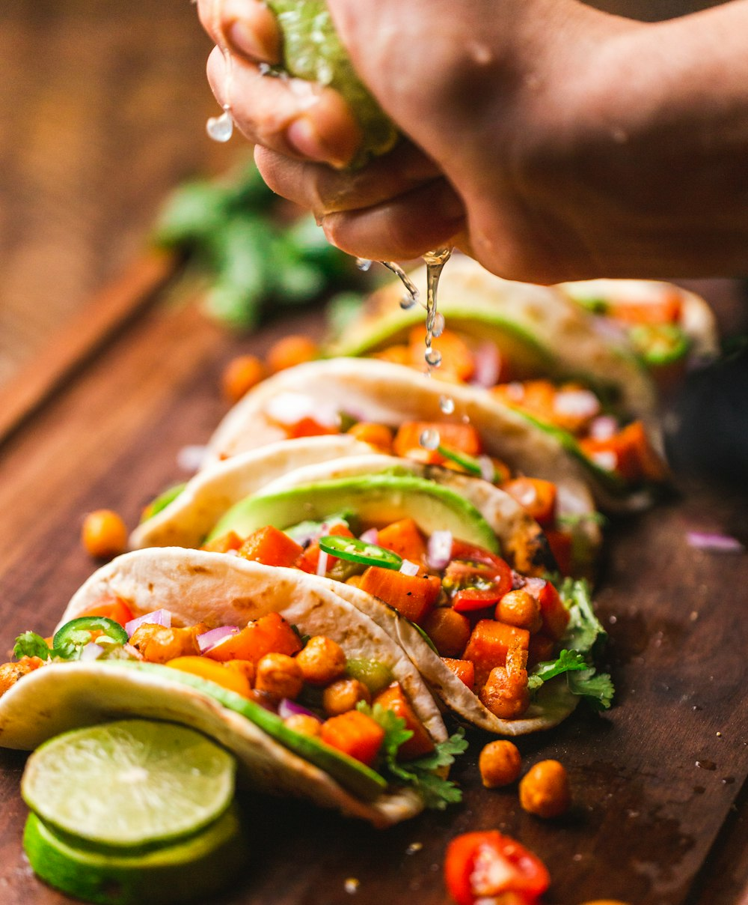

Fried Salami
Thick-cut slices of spiced Dominican beef and pork salami, fried until crisp around the edges with savory garlic aroma.
Green plantains are the heartbeat of Dominican cuisine. Enjoy velvety breakfast mangú with Los Tres Golpes or savory garlic mofongos mashed to order with pork cracklings in traditional wooden mortars.

Every element prepared to golden perfection for a true Dominican breakfast.
Thick-cut slices of spiced Dominican beef and pork salami, fried until crisp around the edges with savory garlic aroma.
Thick slabs of white Caribbean frying cheese, seared golden brown on the outside while remaining warm and tender inside.
Two sunny side up eggs and a generous crown of red onions pickled in vinegar and olive oil that brighten every forkful of mangú.
Mashed with fresh garlic cloves, olive oil, and crispy chicharrón.